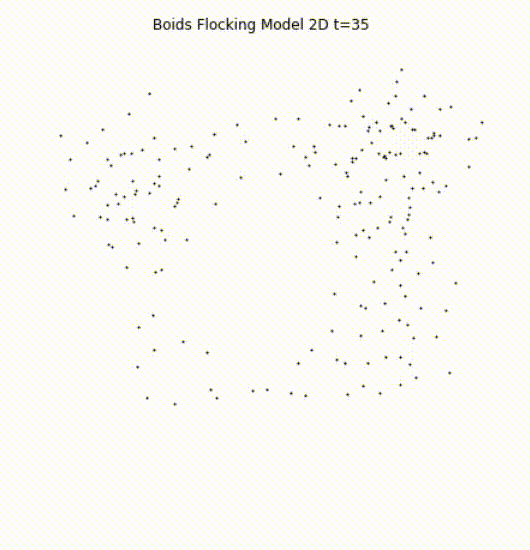
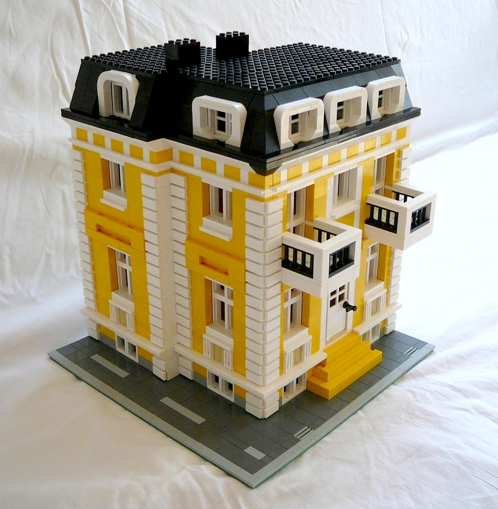
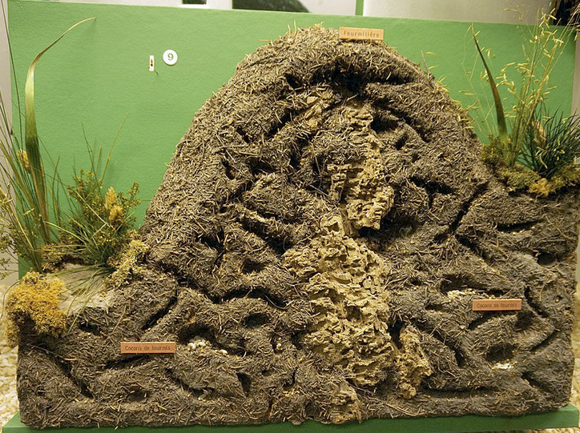

Games and Agents
Session I - Introduction to Agent Based Modeling
Ali Seyhun Saral (Uni. Bologna)
Institute of Psychology at Leiden University.
13 June 2022
A flock of birds
A flock of birds
Simple rules lead to seemingly sophisticated behavior (Reynolds 1987)
- Align yourself with the neighbors in terms of velocity and direction.
- Separating yourself enough from the others to avoid collusion.
- Try to center yourself to your neighbors.

Simple rules -> Complex Behavior
What is a scientific model?
- A simplified representation of some part of the reality that is useful for a scientific purpose.
- Help us to understand the reality it represents.
- Manipulate it to improve causal understanding.
- Make predictions out of it.

“LEGO House” by georgivar is licensed under CC BY-SA 2.0.
Modelling complex systems
The complexity of scientific models was limited by its mathematical tractability.
Computer simlations relaxed relaxed this limitation.
ABM’s are less simplified in a specific way:
- They describe individual components of a system
- Individuals and components are autonomous entities
Agent-based models
- Computational model for simulation the interactions of autonomous objects (agents).
- Agents: people, animals, institutions, particles, etc.
- Bottom-up approach
- Define the behavior of agents and their interactions.
What problems are addressed by ABM?
- Housing market collapse (Gilbert, Hawksworth, and Swinney 2009; Geanakoplos et al. 2012)
- Stock Market fluctuations (LeBaron (2001))
- Managing tropical forests (Huth, Drechsler, and Köhler (2004))
- COVID- Contact Tracing (Hinch et al. 2021)
(See Railsback and Grimm 2019. For more, p.11)
Why ABM?
- Solve problems that traditional models and methods are too simple for.
- Support/refute theory based on additional features.
- Explore potential distribution of outcomes.
- Adresses problems related to emergence.
Emergence
Describes a relationship between a low-level system (micro) and a high-level (macro) system.
Macro-level phenomena can only be derived by studying micro-level phenomena.
Simple interactions between a system’s elements lead to unexpected global behavior (Epstein 1999)

Examples:
- The human body
- The human brain
- Pandemics
- Ecosystems
- Global Production chain
- Mexican waves
Features of ABM
(Romanowska, Wren, and Crabtree 2021)
- There are no strict rules on how ABM should be built.
Some features:
- Emergent
- Heterogeneity
- Temporal
- Spatial
- Learning/adaptation
Complex Adaptive Systems and ABM
- When we use agent-based models, we useally study a compleyx adaptive system.
- Dynamic of systems composed if interacting elements in different levels.
Two historical inspiration
Evolution
Emergence
Evolution: Universal Constructor
- One robot buiding another
- Without a computer
- Design a machine which’s complexity increase under natural selection.
- The concept of celular automata
John von Neumann (1903-1957)
Game of Life (1970)
- A cellular automaton
- Square cells with two states: alive and dead.
- 8 neigbors:
- if <2 alive neighbors: dies
- if 2-3 alive neighbors: lives
- if > 3 alive neighbors: dies
- if 3 alive neighbors: lives

Game of Life (1970)
Axelrod Tournaments (1980)
- Iterated Prisoners Dilemma Game: “Cooperate” “Defect”
- Colleagues were invited to submit their strategies
- Strategies played against each other repeatedly
- 15 strategies initially.
- The winner was the TIT FOR TAT strategy.
Building Agent-Based Models
- Modeling (Design, description etc.)
- Programming
What software to use
https://en.wikipedia.org/wiki/Comparison_of_agent-based_modeling_software
Python
Mesa (Python)
AgentPy (Python)
R
Why Python?
- The skills are transferable
- The language is easy to learn
- You get to understand underlying concepts of ABM
- Potential to use in other fields with packages
- Easier to connect wit data
- Potential to combine other technologies
- Reinfocement learning
- Regression analysis
This workshop
- Hands-on introduction to agent based models
- We will use Python
- We will build models from scratch
- We will use other packages like Axelrod, AgentPy
- Focus more on Game Theory
Workshop Program
13 June 2022, Monday
- Python Basics
14 June 2022, Tuesday
- Python: Introduction to Object-Oriented Programming in Python
- Creating an Agent
- Interacting agents
- Implementing the Game
- Axelrod Tournaments
Workshop Program- cont
15 June 2022, Wednesday
- Creating a Population
- Evolution of strategies
- Python: Numpy, Pandas, Matplotlib
- Sensitivity Analysis
16 June 2022, Thursday
- Grid Games
- Seggregation Model
- Networks
- Advanced Topics Discussion
Preperation
- Jupyter Notebook